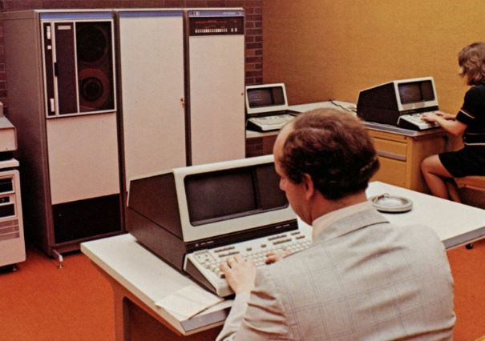

HP-3000
John Young an Idaho native and CEO of Hewlett-Packard donated an HP-3000 model 2 for use
by students in a variety of classes.
The HP-3000 is an interative timesharing computer that can be accessed
via modem or hardwired. It can support 32 simultanious users at any given time.